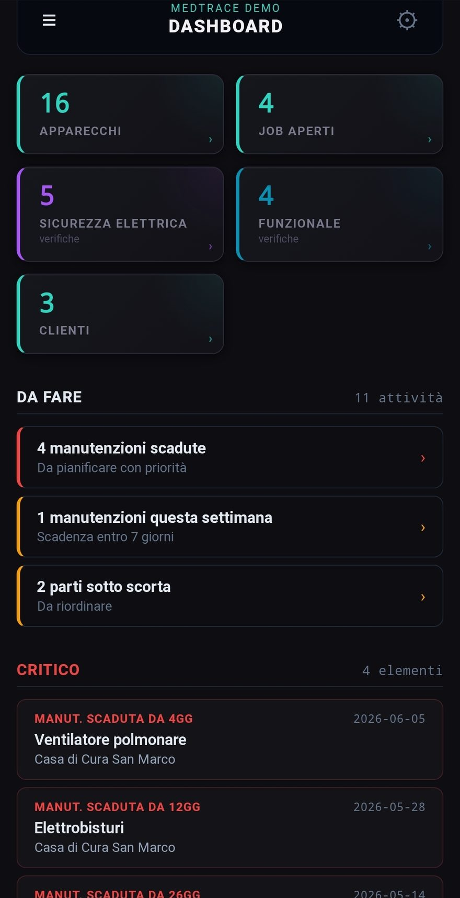
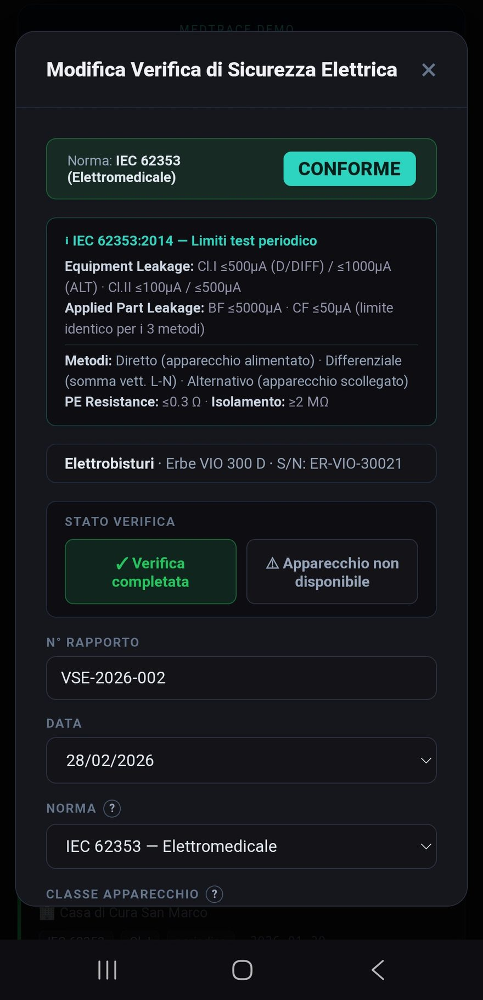
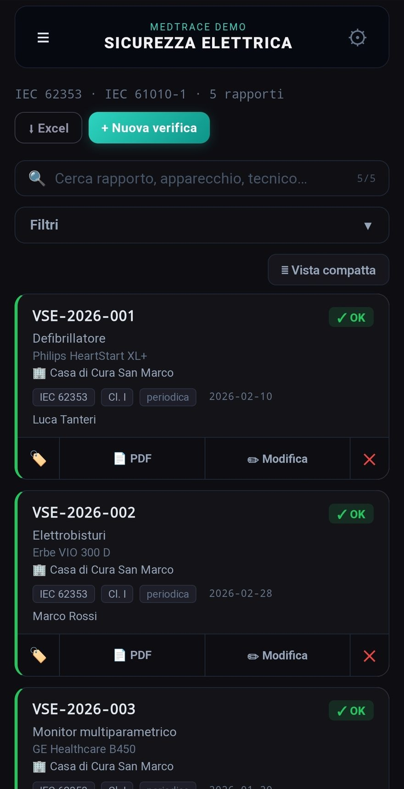
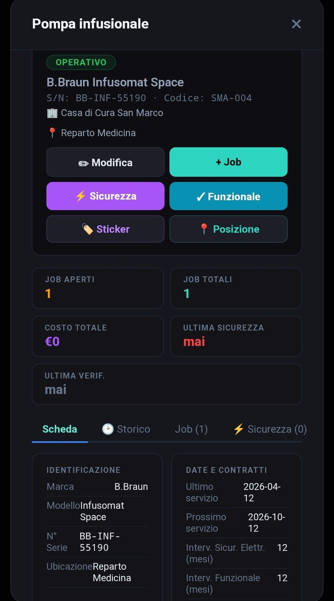
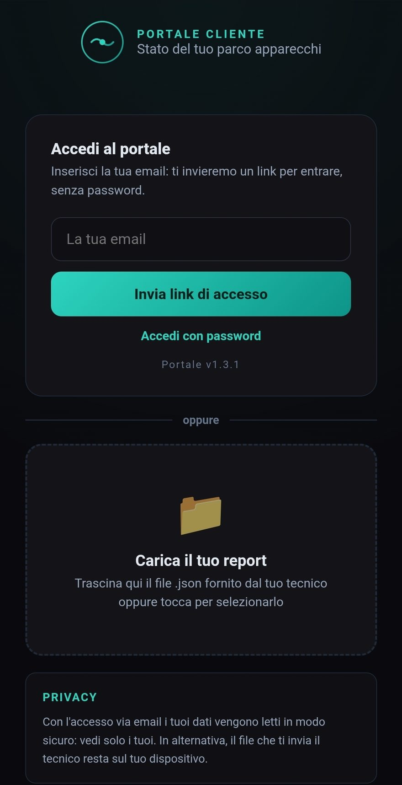

Facciamo verifiche di sicurezza elettrica, manutenzione e riparazioni per le strutture sanitarie del territorio. E il gestionale che usiamo ogni giorno — verifiche, verbali PDF, scadenze, portale clienti — lo puoi usare anche tu.
Verifiche di sicurezza elettrica, prove funzionali, manutenzione e riparazioni. Con un portale dove vedi lo stato di ogni macchina e scarichi i certificati quando vuoi — anche durante un'ispezione.
Su tutte le marche, secondo CEI EN 62353, con verbale e valori di misura. Strumenti tarati e tracciabili.
Pompe, defibrillatori, ventilatori, elettrobisturi, monitor: verifichiamo che funzionino come devono.
Preventiva e correttiva sulle marche su cui siamo certificati dal costruttore; per le altre gestiamo noi l'intervento (referente unico).
Censimento del parco, scadenze e certificati sempre online. Niente più faldoni da cercare prima di un controllo.
Il prezzo si calcola sul numero e sul tipo di apparecchi del tuo studio. Prima ne parliamo insieme — cosa possiamo seguire noi direttamente e cosa conviene coordinare col costruttore — poi il preventivo è su misura e gratuito.
CEI EN 62353, su ogni marca, con verbale. A volume da 25 €. Diritto di chiamata 40-60 €.
Secondo il tipo: pompe, defibrillatori, ventilatori, elettrobisturi, monitor.
Solo sulle marche su cui siamo certificati. Per le altre, referente unico col costruttore.
Più ricambi senza ricarico, minimo ~80 €. Preventivo prima dell'intervento.
Un canone unico per non pensarci, calcolato sul tuo parco apparecchi. Scegli quanto ci occupiamo noi — i livelli sono un punto di partenza, non una gabbia.
Apparecchi, scadenze, manutenzioni, interventi, ricambi, verifiche e portale clienti.
Scegli l'apparecchio e il tipo di prova: misure e limiti sono già impostati. Inserisci i valori, l'esito si calcola da solo e il verbale è pronto da firmare.
Liste di controllo pronte per defibrillatori, ventilatori, pompe, ecografi, riuniti e altre famiglie, con valori attesi e voci N/A. E puoi creare le tue.
In un'unica sessione fai manutenzione, verifica funzionale e sicurezza elettrica: un solo verbale PDF con tutto, e le prossime scadenze si aggiornano da sole. Protocolli pronti per modello.
Priorità, ore, trasferte, ricambi usati e foto. Magazzino con scorte minime, così il pezzo c'è quando serve.
Stampi l'etichetta con codice e QR direttamente dall'app. Chi inquadra il codice apre la scheda dell'apparecchio, sempre aggiornata.
In cantina o in sala macchine la rete non c'è: lavori lo stesso e sincronizzi dopo. Parti dal tuo Excel: importi apparecchi e scadenze e l'app riconosce le colonne da sola. Backup ed export quando vuoi — i dati sono tuoi.
Ogni cliente vede i suoi apparecchi, manda richieste di intervento e scarica i suoi verbali in PDF, sempre aggiornati.
Registri i richiami e gli avvisi di sicurezza dei produttori (FSN) e colleghi gli apparecchi coinvolti. Per ognuno segni l'azione fatta, così sai sempre cosa resta da sistemare.
Ogni apparecchio classificato col codice CND del Ministero della Salute: lo cerchi per nome e l'app compila CND, EMDN e CIVAB. Poi filtri e raggruppi per categoria.
Inventari e ricognizioni in pochi secondi con tag UHF RFID: passi il lettore e gli apparecchi si registrano da soli.
In sviluppo




Ogni tuo cliente ha il suo accesso, in sola lettura e sempre aggiornato.
MedTrace nasce come strumento di lavoro, non come prodotto. L'hanno costruito un tecnico biomedicale di Trieste — con cinque anni in un grande ospedale privato di Londra (gruppo HCA Healthcare), fino al ruolo senior — e una laureata in Ingegneria Clinica, con esperienza al Ministero della Salute sulla classificazione dei dispositivi medici (CND/EMDN). Lo usiamo ogni giorno sul campo e cresce in base a quello che serve davvero. Chi lo adotta parla direttamente con chi lo ha scritto.
No: MedTrace è una web-app (PWA). La apri dal browser e la aggiungi alla schermata Home di telefono, tablet o PC — si comporta come un'app, senza store e senza installazioni.
Sì. Dopo il primo accesso lavori anche completamente offline: i dati restano sul dispositivo e si sincronizzano col cloud quando torni in rete.
Tuoi. Ogni azienda vede solo i propri dati: nessun altro tecnico o società ha accesso ai tuoi clienti. Li esporti quando vuoi (backup completo ed Excel), il cloud è su server europei, e se un giorno smetti porti via tutto.
Le verifiche di sicurezza elettrica su apparecchi elettromedicali e strumentazione da laboratorio (IEC 62353, 60601-1, 61010-1), con limiti ed esito automatici, e le verifiche funzionali con liste di controllo per le famiglie di apparecchi più comuni.
Migliaia, senza rallentare. I dati stanno sul dispositivo in un archivio locale capiente e si sincronizzano col cloud (server europei) quando sei online.
Ha dati realistici già caricati: apri una verifica, genera un verbale, dai un'occhiata al portale.
Apri la demo →